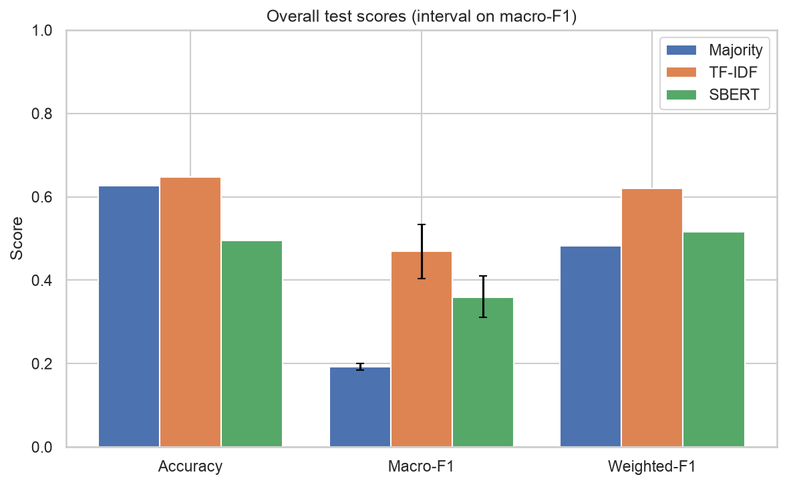
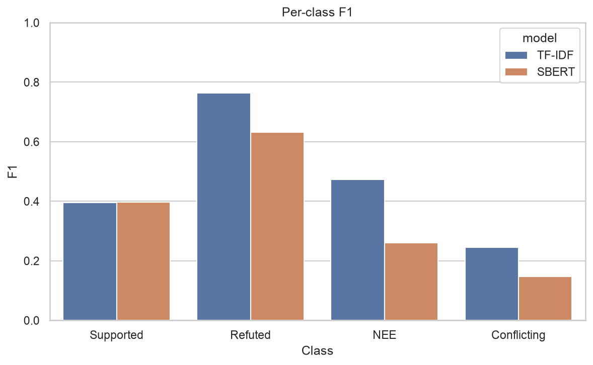
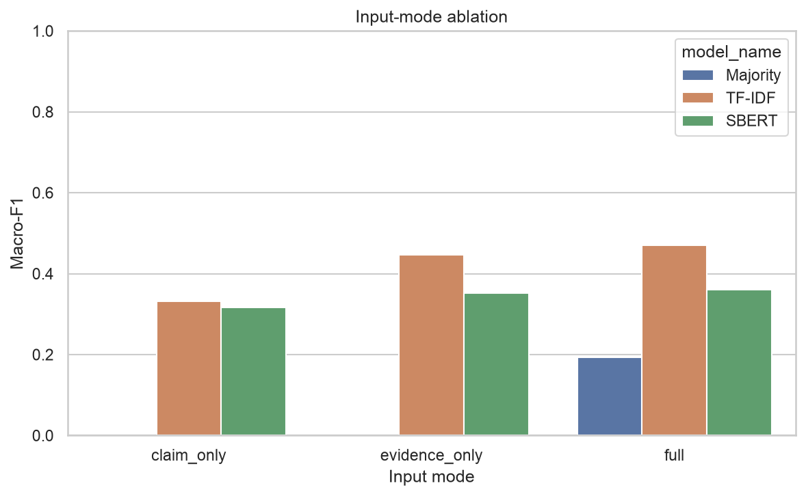
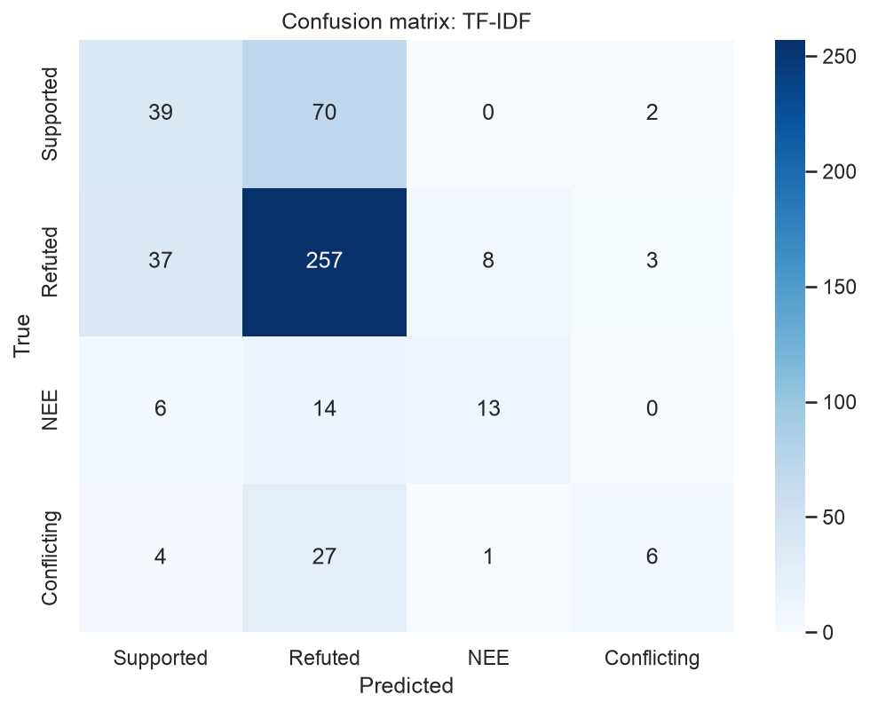
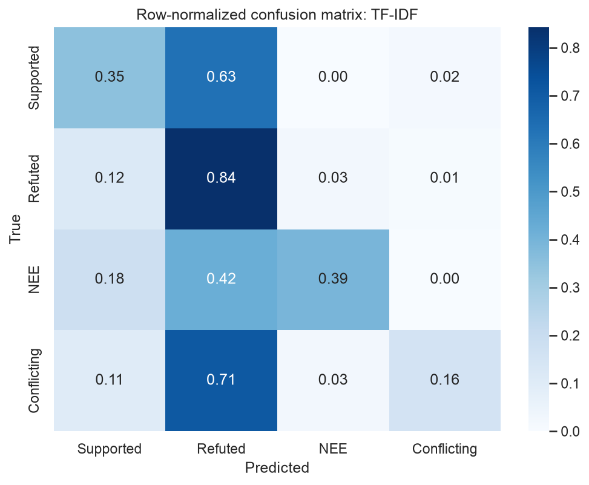
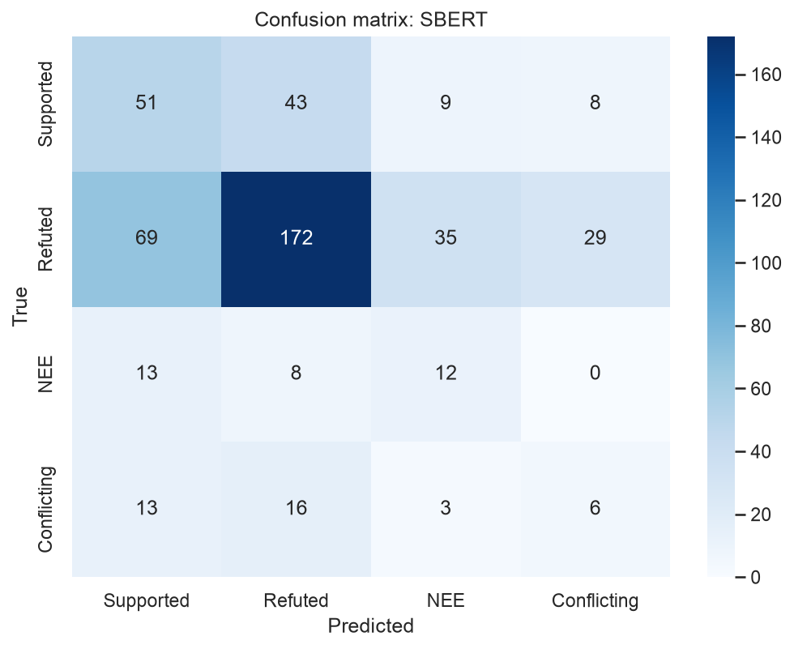
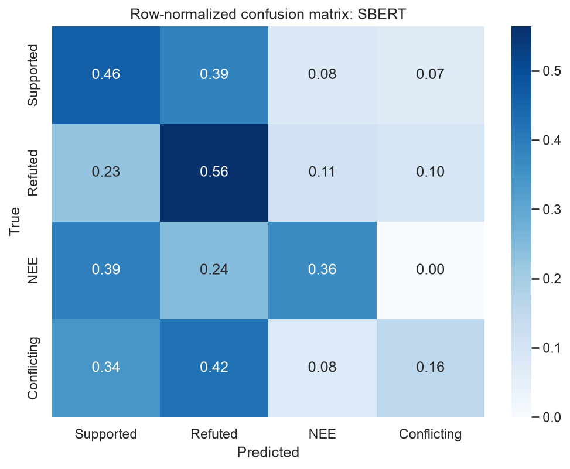
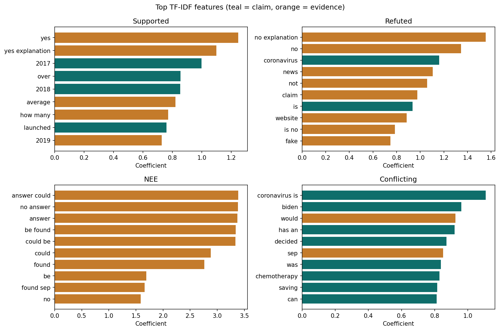
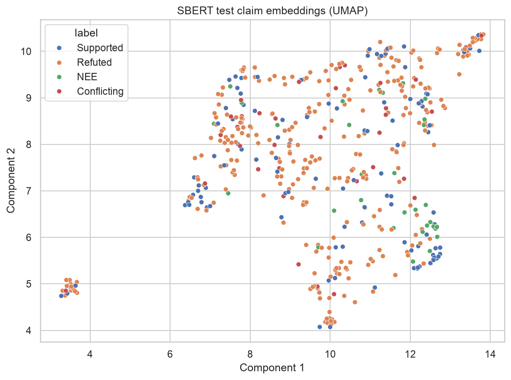

Results
Every number on this page is read from results/metrics or results/tables. Missing Stage 2 files stay marked as pending.
Saved metrics
| Model | Input | Accuracy | Macro-F1 | Macro-F1 95% CI | Weighted-F1 |
|---|---|---|---|---|---|
| majority | full | 0.6263 | 0.1926 | [0.1838, 0.2001] | 0.4824 |
| tfidf_lr | full | 0.6468 | 0.4693 | [0.4041, 0.5333] | 0.6197 |
| tfidf_lr | claim_only | 0.5380 | 0.3317 | [0.2827, 0.3837] | 0.5295 |
| tfidf_lr | evidence_only | 0.6242 | 0.4462 | [0.3866, 0.5024] | 0.6097 |
| sbert_lr | full | 0.4949 | 0.3596 | [0.3115, 0.4098] | 0.5157 |
| sbert_lr | claim_only | 0.4353 | 0.3165 | [0.2703, 0.3629] | 0.4687 |
| sbert_lr | evidence_only | 0.4517 | 0.3520 | [0.3097, 0.3957] | 0.4940 |
Main comparison
| model | accuracy | macro_precision | macro_recall | macro_f1 | macro_f1_ci_low | macro_f1_ci_high | weighted_f1 |
|---|---|---|---|---|---|---|---|
| majority | 0.6263 | 0.1566 | 0.2500 | 0.1926 | 0.1838 | 0.2001 | 0.4824 |
| tfidf_lr | 0.6468 | 0.5721 | 0.4365 | 0.4693 | 0.4041 | 0.5333 | 0.6197 |
| sbert_lr | 0.4949 | 0.3530 | 0.3862 | 0.3596 | 0.3115 | 0.4098 | 0.5157 |


Per-class scores
| model | label | precision | recall | f1 | support |
|---|---|---|---|---|---|
| majority | Supported | 0.0000 | 0.0000 | 0.0000 | 111 |
| majority | Refuted | 0.6263 | 1.0000 | 0.7702 | 305 |
| majority | Not Enough Evidence | 0.0000 | 0.0000 | 0.0000 | 33 |
| majority | Conflicting Evidence/Cherrypicking | 0.0000 | 0.0000 | 0.0000 | 38 |
| tfidf_lr | Supported | 0.4535 | 0.3514 | 0.3959 | 111 |
| tfidf_lr | Refuted | 0.6984 | 0.8426 | 0.7637 | 305 |
| tfidf_lr | Not Enough Evidence | 0.5909 | 0.3939 | 0.4727 | 33 |
| tfidf_lr | Conflicting Evidence/Cherrypicking | 0.5455 | 0.1579 | 0.2449 | 38 |
| sbert_lr | Supported | 0.3493 | 0.4595 | 0.3969 | 111 |
| sbert_lr | Refuted | 0.7197 | 0.5639 | 0.6324 | 305 |
| sbert_lr | Not Enough Evidence | 0.2034 | 0.3636 | 0.2609 | 33 |
| sbert_lr | Conflicting Evidence/Cherrypicking | 0.1395 | 0.1579 | 0.1481 | 38 |
Input-mode ablation
| model | input_mode | accuracy | macro_f1 |
|---|---|---|---|
| majority | full | 0.6263 | 0.1926 |
| tfidf_lr | full | 0.6468 | 0.4693 |
| tfidf_lr | claim_only | 0.5380 | 0.3317 |
| tfidf_lr | evidence_only | 0.6242 | 0.4462 |
| sbert_lr | full | 0.4949 | 0.3596 |
| sbert_lr | claim_only | 0.4353 | 0.3165 |
| sbert_lr | evidence_only | 0.4517 | 0.3520 |

Confusion matrices
TF-IDF + LR counts
| True \ Pred | Supported | Refuted | NEE | Conflicting |
|---|---|---|---|---|
| Supported | 39 | 70 | 0 | 2 |
| Refuted | 37 | 257 | 8 | 3 |
| NEE | 6 | 14 | 13 | 0 |
| Conflicting | 4 | 27 | 1 | 6 |

TF-IDF + LR row-normalized
| True \ Pred | Supported | Refuted | NEE | Conflicting |
|---|---|---|---|---|
| Supported | 0.351 | 0.631 | 0.000 | 0.018 |
| Refuted | 0.121 | 0.843 | 0.026 | 0.010 |
| NEE | 0.182 | 0.424 | 0.394 | 0.000 |
| Conflicting | 0.105 | 0.711 | 0.026 | 0.158 |

SBERT + LR counts
| True \ Pred | Supported | Refuted | NEE | Conflicting |
|---|---|---|---|---|
| Supported | 51 | 43 | 9 | 8 |
| Refuted | 69 | 172 | 35 | 29 |
| NEE | 13 | 8 | 12 | 0 |
| Conflicting | 13 | 16 | 3 | 6 |

SBERT + LR row-normalized
| True \ Pred | Supported | Refuted | NEE | Conflicting |
|---|---|---|---|---|
| Supported | 0.459 | 0.387 | 0.081 | 0.072 |
| Refuted | 0.226 | 0.564 | 0.115 | 0.095 |
| NEE | 0.394 | 0.242 | 0.364 | 0.000 |
| Conflicting | 0.342 | 0.421 | 0.079 | 0.158 |

TF-IDF top features

Sentence-BERT claim map

McNemar and bootstrap
Test: chi2. Discordant pairs: 192. p-value: 1.38e-07.
Table (both correct, TF-IDF only / SBERT only, both wrong): [[182, 133], [59, 113]].
Mean macro-F1 difference (SBERT minus TF-IDF): -0.1095. 95% CI: [-0.1796, -0.0392]. Share of resamples with SBERT ahead: 0.0010 (1000 resamples).
Verdict
The majority baseline reaches a macro-F1 of 0.1926. TF-IDF + logistic regression reaches a macro-F1 of 0.4693. Sentence-BERT + logistic regression reaches a macro-F1 of 0.3596. The macro-F1 difference (SBERT minus TF-IDF) is -0.1095 with a 95% bootstrap interval of [-0.1796, -0.0392]. McNemar's test on paired correctness gives p = 1.38e-07. SBERT is worse than TF-IDF at alpha = 0.05.